| 日付 | 2024年5月2日（木） - 2024年5月3日（金） | ||||||
|---|---|---|---|---|---|---|---|
| 山域 | 日光周辺、尾瀬 | ||||||
| メンバー | 単独 | ||||||
| 山行形態 | 1泊2日車中泊 | ||||||
| アクセス | 車 | ||||||
| ルート (Map1) |
|
GWの前半に粟ヶ岳を歩いて、久々に残雪のある山に行ってみたくなった。
もう残雪のある山は多くないのだが、至仏山であればまだ雪がありそうだ。
快晴予報の5/3に登ることにし、車中泊予定で前日に出発する。
1日目
本日は前座の山に登ることにする。向かったのは戸神山。
小さいながらも展望の良い山で、前から注目していた山だった。
登山口のスペースに車を停める。標高460m。
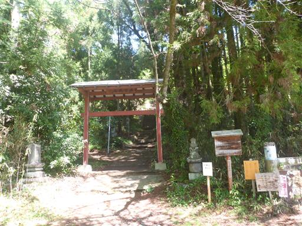
階段を登る。
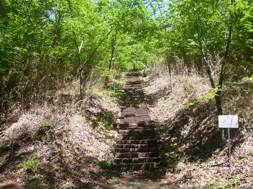
石段の先に古い神社がある。
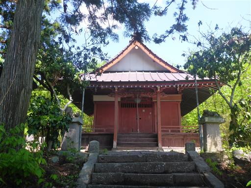
ここから先は林道歩き。
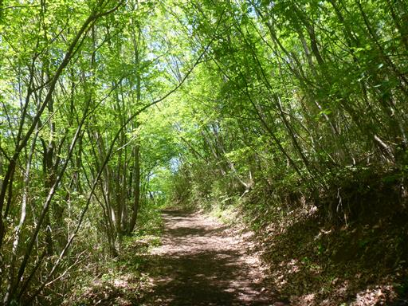
道端に置かれているこれは何だろう？
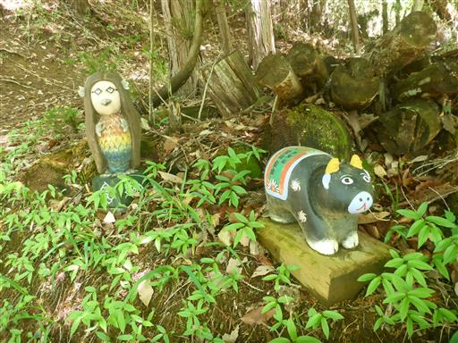
このまま林道を歩くコースと直登コースがある。登りは直登コースを選択。
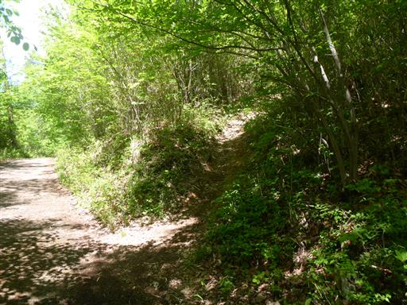
鉱山跡の標識がある。周囲を見渡してみたが、鉱山跡っぽいものは見当たらなかった。

岩場が現れる。傾斜が緩く難しい岩場ではないが、このような岩場がずっと続く。
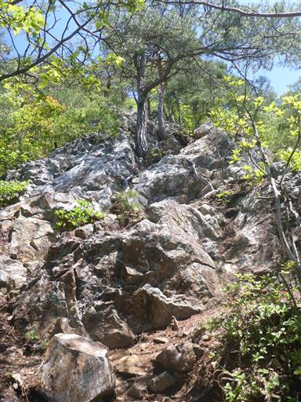
鎖場も出てくる。鎖を掴むまでもない道ではあるが、
でこぼこの岩場が続く道は登っていて楽しい。
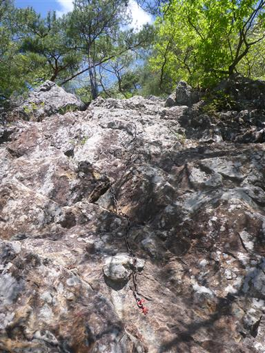
分岐点。林道からの道と合流する。
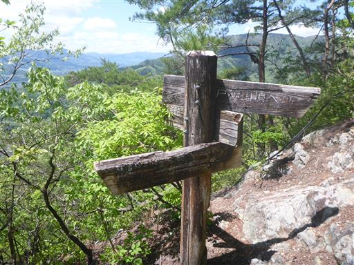
小さな石仏が置かれている。
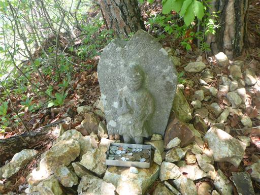
戸神山山頂に到着。標高772m。
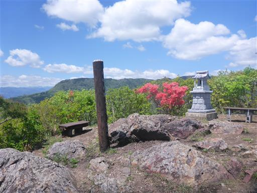
石灯篭が並んでいる。
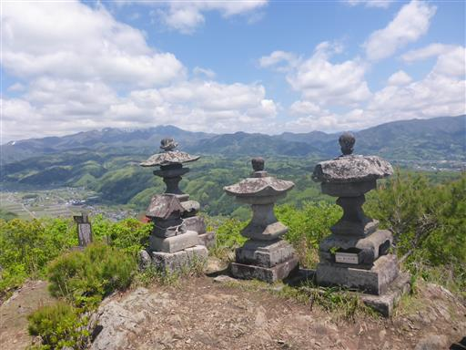
山頂は360度の大展望台。こちはら子持山（左）と小野子山（右）。
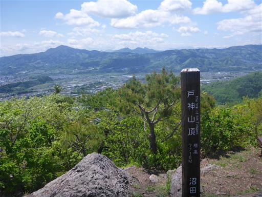
上州三峰山。いずれも懐かしい山々だ。
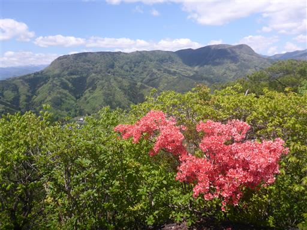
赤城山。こちらから眺める赤城山はちょっと新鮮。
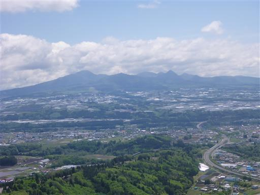
上州武尊山は山頂部が少し雲に覆われている。
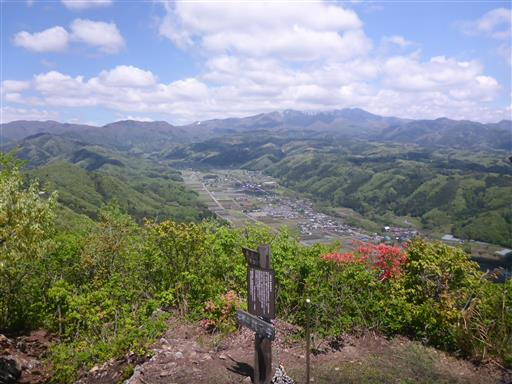
展望を満喫したら下山開始。降りは緩やかな林道を歩く予定だったが、
道を間違えて登りと同じ道を降ってしまった。
傾斜は急だが難易度は高くない岩場のためサクサク降れる。
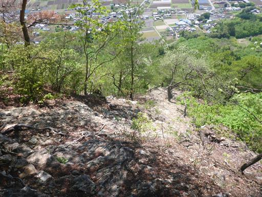
無事下山。往復1時間ちょっとだった。
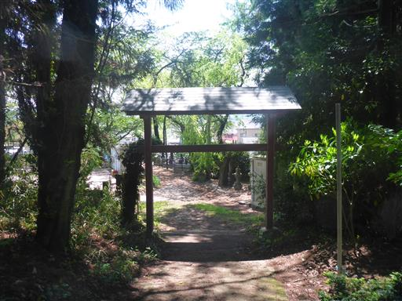
続いて鉱石山に登ることにする。戸神山とセットで登られることが多い山だ。
広大な駐車場に車を停める。標高760m。
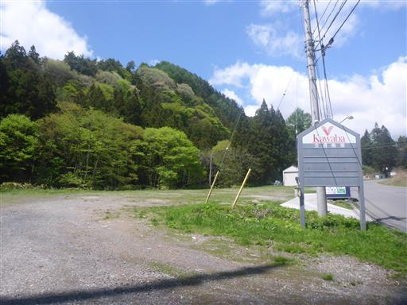
しばらくは林道を登っていく。
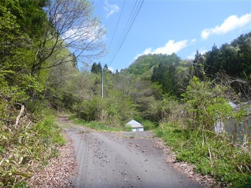
登山道入口に到着。
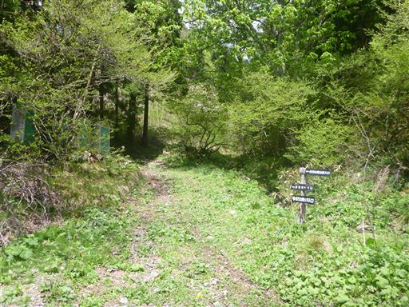
ここにはトイレが4つもある。
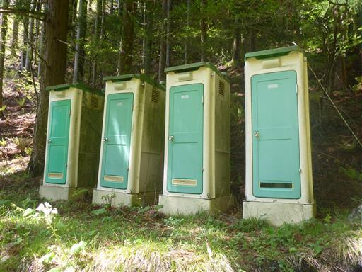
その先も林道と大して変わらない道が続く。
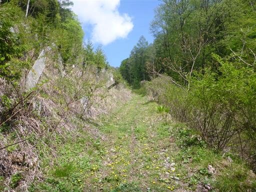
字の下手な標識。
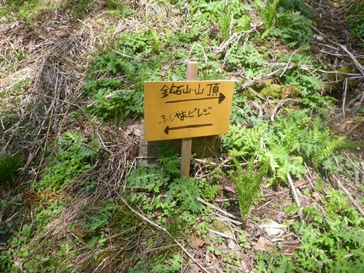
ようやく登山道っぽい雰囲気になってきた。
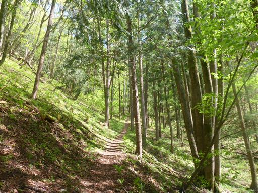
レール跡。山の名前から分かるように、かつては鉱石（柘榴石）が採れたようだ。
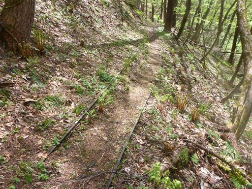
尾根に出ると淡い新緑が美しい景色が広がる。
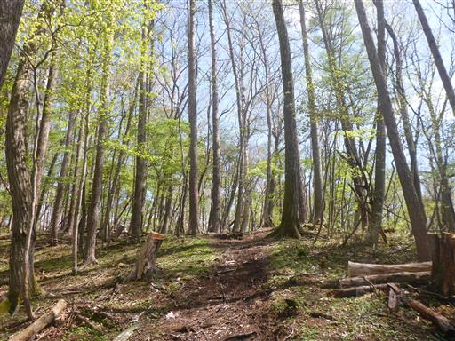
鉱石山との分岐点を過ぎて、先に木賊山に行くことにする。
この尾根はあまり整備されておらず、半分バリエーションルートのような道だ。
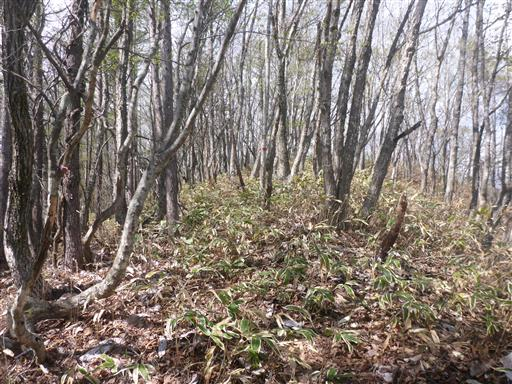
木賊山山頂に到着。標高1289m。
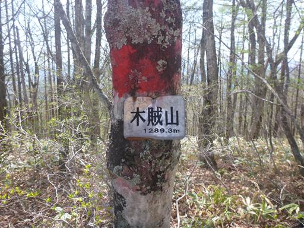
こんな冴えない山頂が、先日登った粟ヶ岳とほぼ同じ標高とは信じられない。
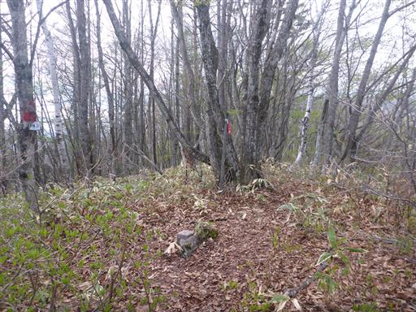
鉱石山との分岐点まで戻ってくる。こんなところにもトイレがある。
調べてみると、小学生が自然学習で登山するためにあるとのこと。
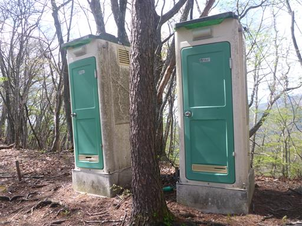
分岐点からすぐに、鉱石山山頂に到着する。標高1205m。
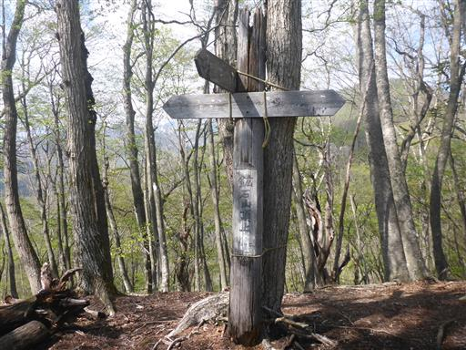
山頂というより、ほとんどただの尾根だ。
群馬百名山に指定されているらしいが、名山の要素は見当たらない。
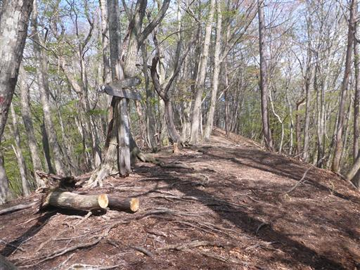
戸神山に続いて2度目の昼食をとったら下山開始。
この辺りも新緑が美しい。
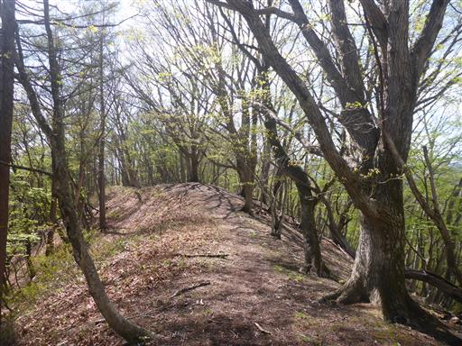
すぐ近くに上州武尊山が見える。
とはいえ雑木と雲に隠されてほとんど山は見えない。
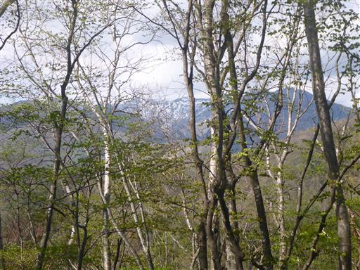
休憩所の標識。特に何がある訳でもなく、ただ「休憩所」と書かれている。
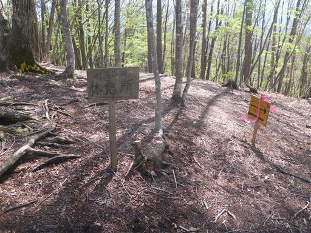
木に巻き付くのを失敗したようだ。
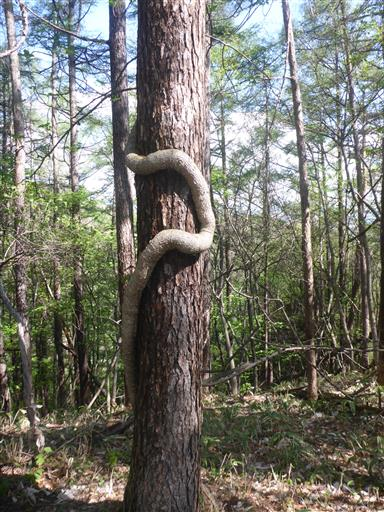
下山。林道に出てくる。
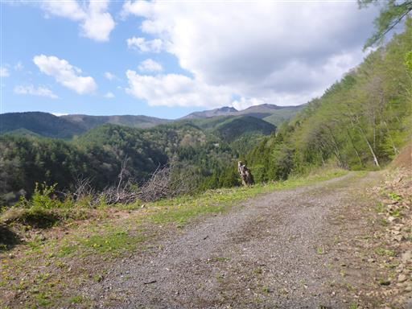
しばらく歩くと車道に出る。あとは車道を15分ほど歩くと駐車場だ。
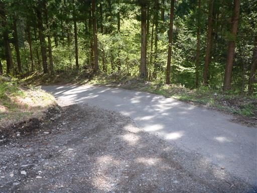
下山後、夕食の時間まで暇なので、沼田公園に行ってみる。
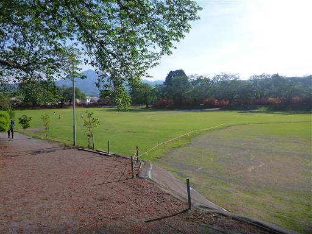
とてつもない密度でツツジの花が咲いている。

ここは沼田城跡でもあるのだが、城の痕跡はあまり残っていない。
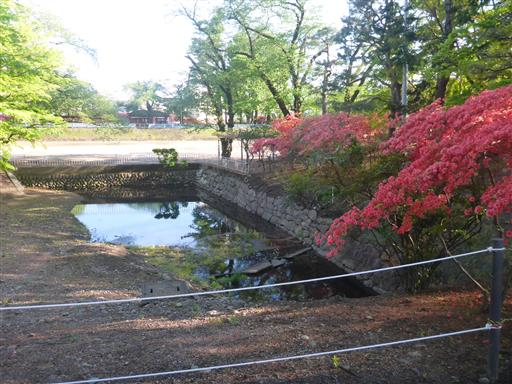
こちらは鮮やかな色のツツジだ。
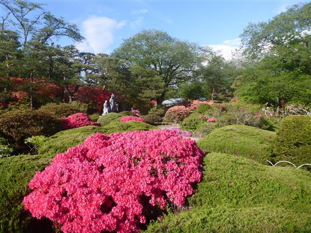
復元された鐘楼がある。
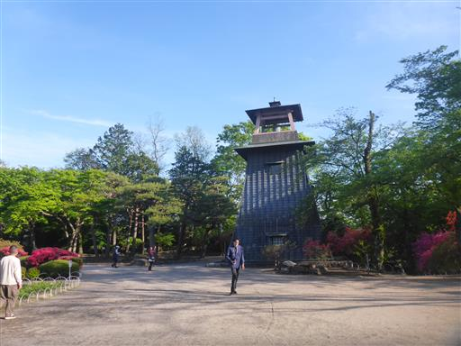
扉が開いているので中に入ってみる。
内部はかなり雑然としていて、入ってよいのかどうかよく分からない感じだ。
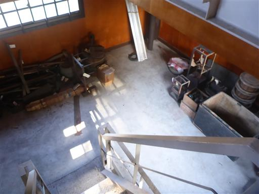
鐘楼の上に出てくる。きれいな庭園を見渡せる。
鐘があるので一突きする。
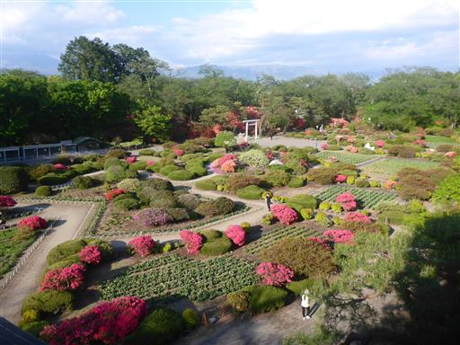
本日朝に登った戸神山が良く見えている。
尖がった山頂のかわいらしい山だ。
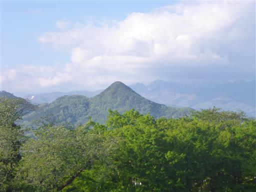
日本一の大天狗面が奉納されている。鼻の長さは2.8m。
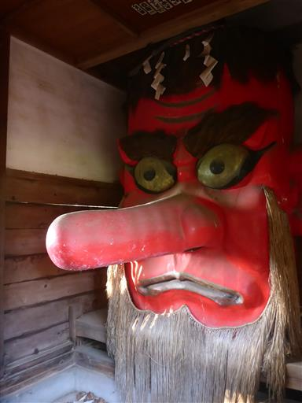
小さな動物園もあるのだが、ネットがあってかなり見づらい。
いるのはウサギや鳥など。
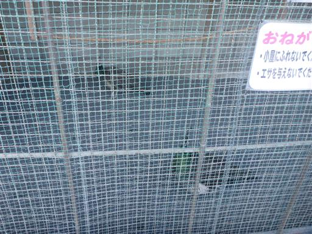
沼田公園を後にして、銀の月というレストランでトンカツをいただく。
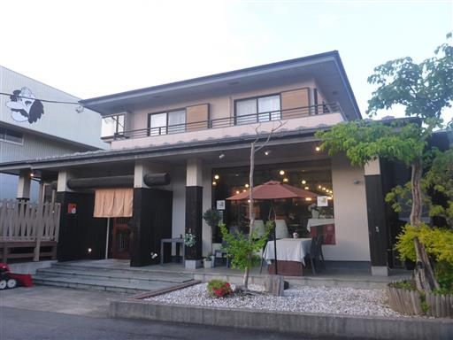
夕食後は戸倉に移動。この地に来るのは2007年に至仏山に登った時以来。
2010年にも一度戸倉を目指したことがあったが、目的地を全く別の戸倉駅と勘違いし、
この地にたどり着けなかったのは苦い思い出だ。
本日はここで車中泊。明日に備えて9時半に就寝。